Une prestation avec Tiango, de la reconnaissance au bilan
Sept moments, un seul dossier. Ce que vous notez à une étape sert à la suivante, sans ressaisie.
-
Un mois avant
Repérer chaque site, debout, à une main
Vous classez vos sites à visiter par lieu : Dol-de-Bretagne réunit la cathédrale, le Cathédraloscope et le Mont Dol, Paris en réunit bien d'autres. La fiche de repérage est celle du site, pas de la ville : l'accès en fauteuil ou les horaires ne sont pas les mêmes d'un site à l'autre.
- Horaires, jours de fermeture, tarifs individuels et groupes, réservation, moyens de paiement. Un jour de fermeture ambigu (« du lundi au mercredi », « sauf juillet ») est signalé comme à confirmer, jamais deviné.
- Guide du site obligatoire ou non, carte de guide-conférencier exigée, droit de parole, audioguide.
- Accès en fauteuil, toilettes, dépose et parking des autocars, point de rendez-vous.
- Photos rangées par étape de la visite, avec l'heure et la position GPS. Dépliants et plans joints en PDF.
Au retour, le compte-rendu sort en Word ou en PDF, photos comprises.
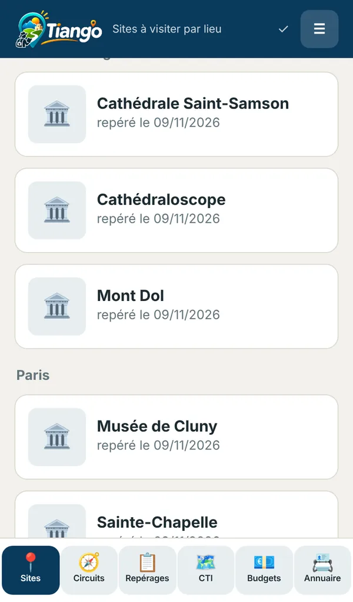
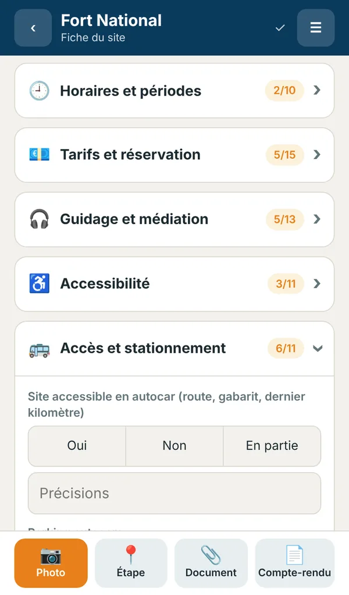
-
Quinze jours avant
Construire le cadre technique d'itinéraire
Vous alternez trajets et arrêts. Tiango fait les additions.
- Horaires calculés en cascade à partir de l'heure de départ.
- Kilomètres cumulés, temps de déplacement et temps d'arrêt, marge sur l'heure de fin imposée.
- Ce qui ne peut se vérifier que sur place ressort en jaune, puis devient la liste de travail du repérage.
- Les chronos et constats relevés sur le terrain reviennent dans le CTI, après votre accord ligne par ligne.
- Horaires souples ou impératifs : une table réservée à 12 h 30, une entrée horodatée ou un bateau se marquent « impératif » avec leur heure. Tiango signale dès la préparation un déroulé qui ne les tient pas.
- Le dossier de chaque étape : bon d'échange ou numéro de réservation, confirmation, date limite, effectif attendu, consignes convenues avec le prestataire.
- Un plan d'accès simple qui distingue la dépose, le stationnement, l'entrée et le rendez-vous.
- Une vérification avant le départ : confirmations manquantes, bons absents, dates limites dépassées ou proches. Elle s'affiche aussi à l'écran de démarrage de la prestation.
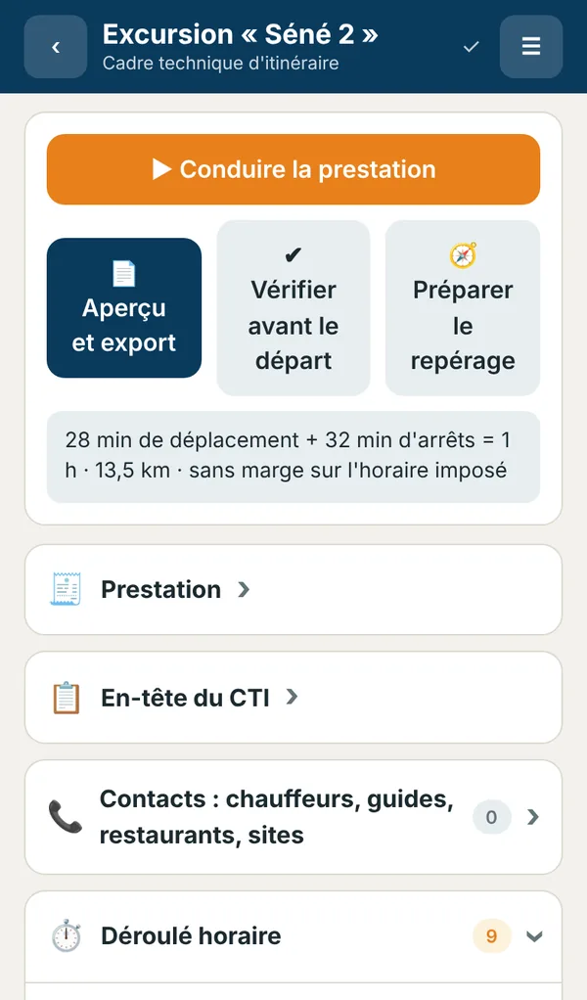
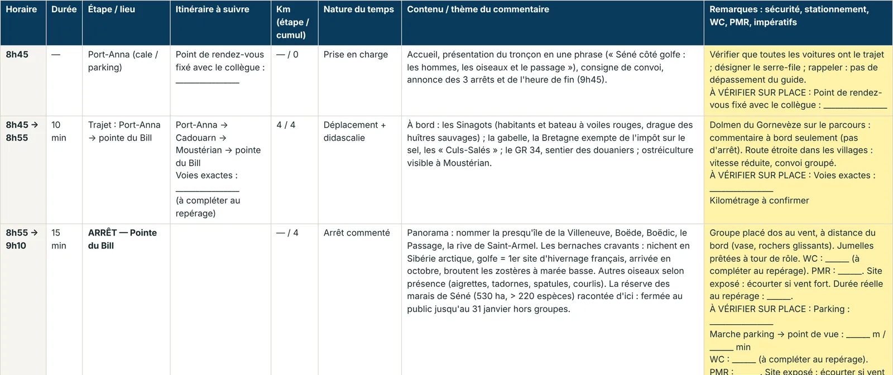
Le même CTI, tel qu'il sort en Word ou en PDF au format paysage. Les cases jaunes restent à vérifier sur place. Le dossier du jour et le plan d'accès suivent le déroulé dans le même document. -
Dix jours avant
Préparer ce que vous direz, dans chaque langue
Le discours est rattaché à son site à visiter et se découpe en modules : un emplacement, une durée, un message clé, l'endroit où placer le groupe, et le texte.
- Français, anglais, espagnol, ou toute autre langue : un bouton pour passer de l'une à l'autre.
- Des formules qui assemblent les modules selon le temps disponible.
- Anecdotes avec leur statut (fait documenté, tradition, légende), questions fréquentes, plan B, phrases à ne pas dire, sources.
- Anecdotes et questions rattachées à une station : devant le module M2, les boutons n'affichent que ce qui concerne M2, avec un accès aux autres si besoin.
- Un statut par module (à recouper, validé par, source) et un rappel « avant le départ » des modules non validés. Les consignes de sécurité s'affichent à la première station, et une visite interrompue se reprend là où vous l'avez laissée.
Pour un nouveau site, Tiango prépare la consigne à donner à l'assistant d'intelligence artificielle de votre choix, puis importe sa réponse et la rattache au bon site, en vous demandant lequel quand deux sites portent le même nom. Les faits restent à vérifier par vous : Tiango range le texte, il ne le garantit pas.
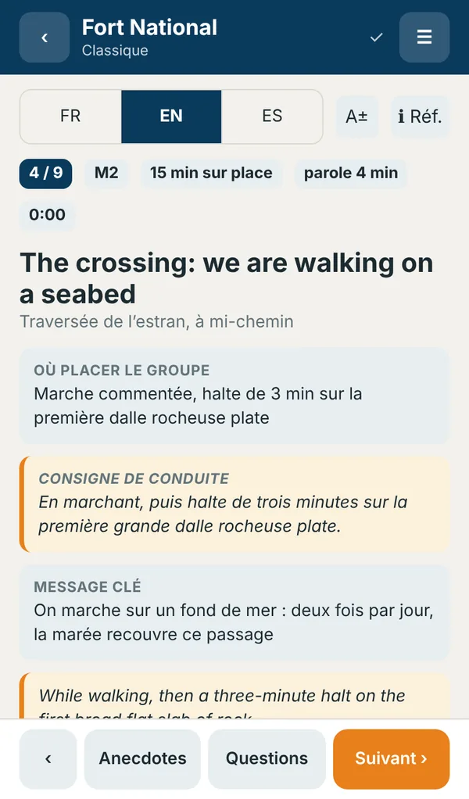
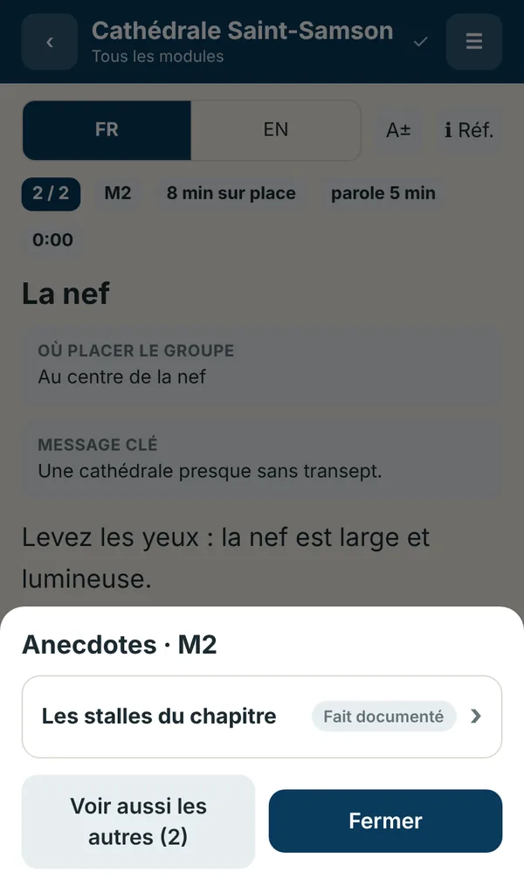
-
Une semaine avant
Chiffrer, puis fixer votre prix
Vous saisissez les coûts poste par poste, par personne ou en forfait pour le groupe.
- Coût total et coût de revient par participant payant.
- Trois propositions de prix selon le taux de marge que vous réglez.
- Pour le prix que vous retenez : la marge, le seuil de rentabilité, et ce qu'elle devient si le groupe est plus petit. Si le prix ne couvre même pas le coût par personne, Tiango le dit au lieu d'afficher un seuil absurde.
Tiango ne traite pas la TVA. Un poste laissé sans montant est signalé : le total n'est jamais présenté comme complet s'il ne l'est pas.
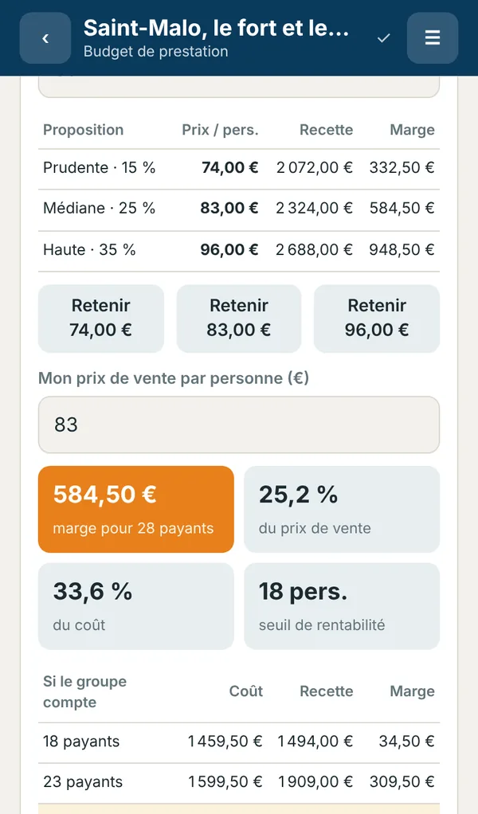
-
Le jour de la prestation
Conduire, avec l'heure sous les yeux
Une étape à la fois. Tiango compare l'heure du téléphone au prévu et vous dit où vous en êtes.
- Retard ou avance, temps restant sur l'étape, heure de fin projetée.
- Depuis l'arrêt : la visite préparée, la fiche de repérage, les contacts à appeler, le plan B.
- Un retard à rattraper : Tiango propose de raccourcir les arrêts à venir, vous ajustez.
- Un site fermé : vous annulez l'arrêt, la suite est recalée aussitôt.
- Un horaire impératif menacé (la table de 12 h 30, le bateau) s'affiche en alerte dès que le retard projeté le compromet. « Protéger l'horaire impératif » propose de raccourcir seulement les arrêts qui le précèdent.
- Le dossier du jour : contacts, urgences, bons d'échange, confirmations et consignes convenues, d'un seul bouton, avec les numéros cliquables.
- Garder le groupe ensemble : l'effectif attendu, des comptages horodatés qui disent « il manque 2 », le rendez-vous rappelé après le temps libre, et cinq consignes courtes en six langues avec l'heure déjà insérée.
Le CTI de référence n'est pas touché pendant la journée.
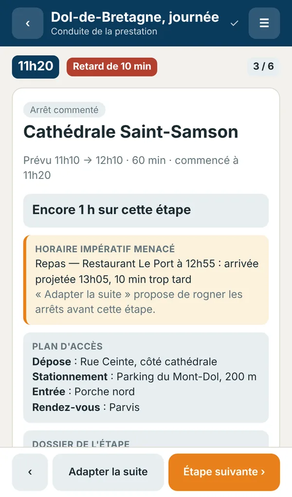
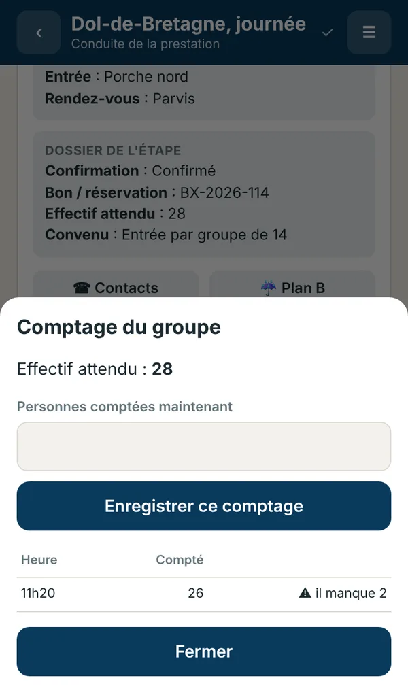
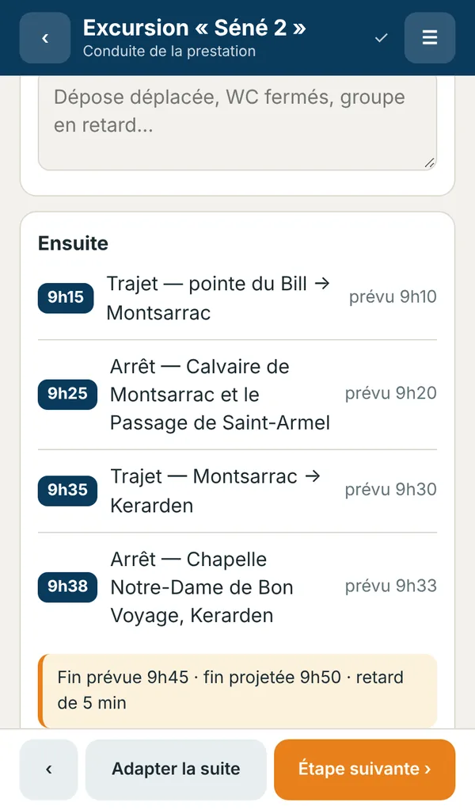
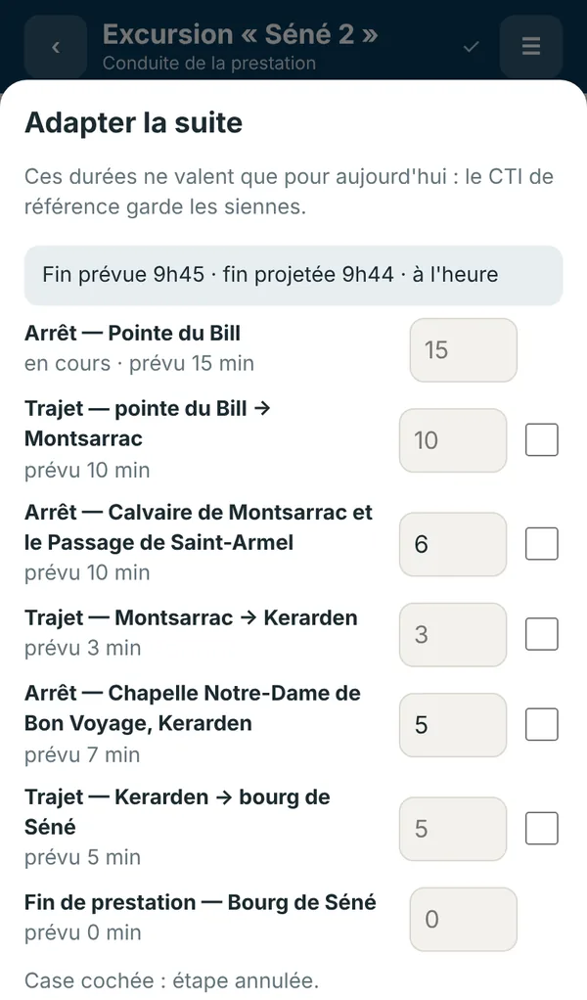
-
Le soir
Garder ce qui doit devenir la référence
Le bilan met le prévu et le réel côte à côte. Vous cochez ce que vous reportez dans le CTI.
- Les constats du jour sont proposés d'office.
- Les durées réelles ne le sont pas : une journée exceptionnelle n'a pas à remplacer le prévu.
- La durée d'origine reste affichée à côté de la durée relevée.
- Chaque réalisation est conservée : heures réelles, constats et derniers comptages vont dans l'historique du CTI. Préparer la prochaine conduite n'efface pas la précédente.
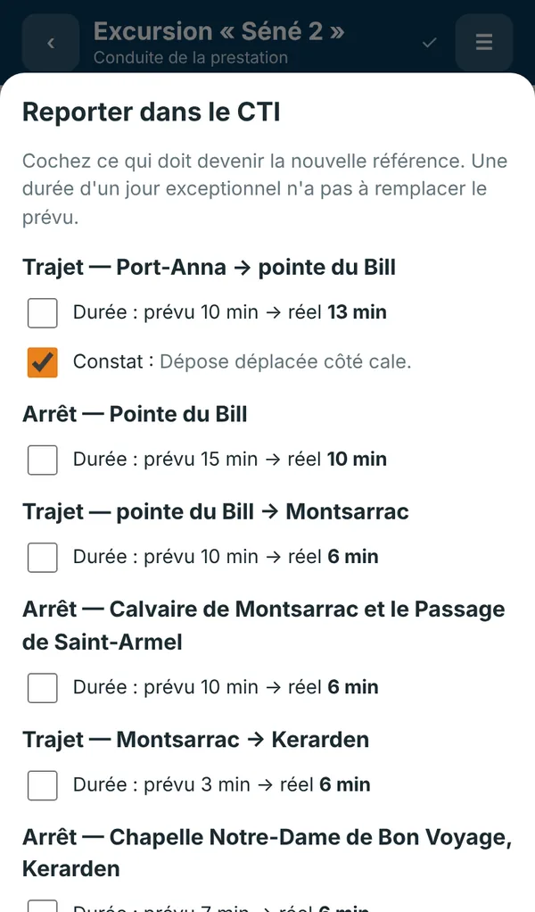
-
À tout moment
Retrouver le bon interlocuteur
L'annuaire a son propre onglet. Chauffeur, restaurant, site, bateau : vous cherchez un nom, une ville ou un numéro, et vous appelez d'un geste.
- Une fiche par prestataire, filtrée par rôle.
- Le même prestataire se rattache à plusieurs CTI sans être ressaisi.
- Ses coordonnées reviennent dans le dossier du jour, en conduite.
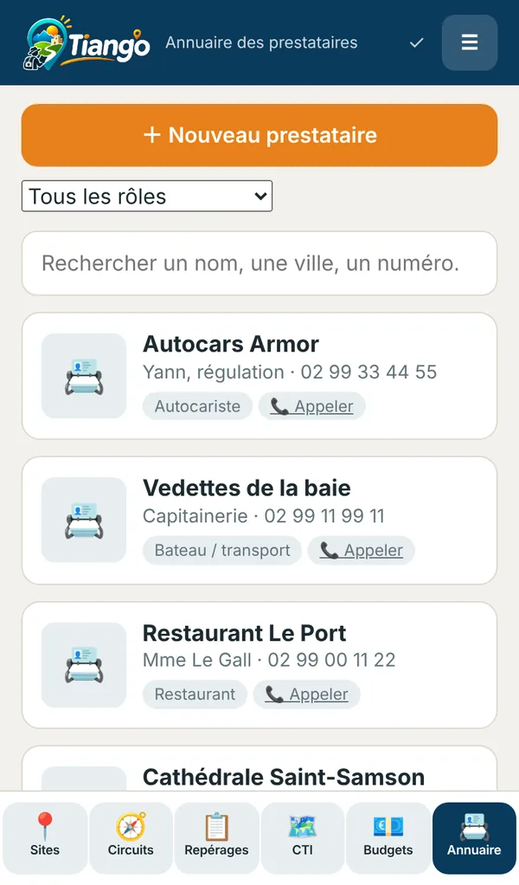
Construit sur de vrais dossiers de guide
Les écrans de cette page montrent des dossiers réels, préparés pour des visites en Bretagne et en Normandie. Voici ce que chacun contient une fois dans Tiango.
-
Fort National, Saint-Malo
Un fort de mer accessible à marée basse seulement.
- 15
- modules, dont cinq extensions
- 3
- formules, de 1 h 25 à 3 h 10
- 3
- langues pour le discours et les consignes de sécurité
- 28
- sources citées
-
Le Mont-Saint-Michel
Le village, les remparts et la baie, avec ou sans l'abbaye.
- 12
- modules
- 18
- anecdotes, chacune avec son statut
- 19
- phrases à ne pas dire, et quoi dire à la place
- 125
- sources citées
-
Dinard
De l'embarcadère à Saint-Enogat par le chemin des douaniers.
- 10
- modules
- 3
- formules selon l'heure du dernier bateau
- 43
- termes au glossaire trilingue
- 107
- sources citées
-
Excursion à Séné
Un cadre technique d'itinéraire d'une heure, en voitures.
- 9
- lignes, de la prise en charge au passage de témoin
- 13,5
- kilomètres
- 60
- minutes, sans marge
- 9
- points à vérifier au repérage
Essayer d'abord, puis une licence annuelle
Vous ouvrez Tiango et vous travaillez tout de suite, sans compte. La licence lève les limites de l'essai.
- L'essai
- Complet dans ses fonctions, limité en volume : 3 sites à visiter, 1 circuit, 2 CTI, 1 discours, 1 budget, 1 repérage de circuit et 5 prestataires dans l'annuaire. Ce que vous avez saisi reste à vous, et rien n'est supprimé quand la limite est atteinte.
- La licence
- Une licence est annuelle et nominative. Elle prend la forme d'une clé que vous collez dans le menu de l'application. Elle est vérifiée sur l'appareil, sans serveur et sans réseau.
- Obtenir une clé
- Le tarif et les conditions vous sont donnés sur demande. Écrivez à contact@tiango.fr en indiquant le nom à inscrire sur la licence.
Vos dossiers restent chez vous
Tiango n'a ni serveur ni compte. Tout ce que vous saisissez est enregistré dans votre appareil, et seulement là.
- Sans réseau
- Après une première ouverture, l'application se lance et enregistre sans connexion. Le menu indique si elle est prête.
- Un témoin d'enregistrement
- Une coche confirme que la saisie est écrite. Si l'appareil refuse d'enregistrer, Tiango garde la saisie à l'écran et vous demande quoi faire avant de quitter.
- Une sauvegarde en un fichier
- Pour changer d'appareil ou vous protéger d'une perte, vous exportez un fichier et vous le réimportez. Il n'y a pas de synchronisation automatique entre vos appareils.
- Un historique de vos prestations
- Chaque conduite terminée est gardée avec ses heures réelles, ses constats et ses comptages, tant que vous ne supprimez pas le CTI.
- Une corbeille de trente jours
- Une fiche supprimée par erreur se restaure depuis le menu.
- Ce que cela vous demande
- Sauvegarder régulièrement : un téléphone perdu emporte ce qui n'a pas été exporté. Le fichier de sauvegarde n'est pas chiffré.
Questions fréquentes
Faut-il installer quelque chose ?
Non. Tiango s'ouvre dans le navigateur. Sur iPhone et iPad, ajoutez-le à l'écran d'accueil depuis le bouton Partager de Safari : il se lance alors comme une application et ses données sont mieux protégées.
Quelle différence entre un lieu, un site à visiter et un discours ?
Le lieu est la ville, la région ou le pays. Le site à visiter est ce que vous visitez : sa fiche de repérage (accessibilité, horaires, accès) lui appartient, car elle ne dépend pas de la ville. Le discours est le texte que vous dites sur ce site, en une ou plusieurs langues.
Comment fonctionne la licence ?
Vous recevez une clé nominative valable un an, que vous saisissez dans le menu de l'application. Sa validité se vérifie sur l'appareil, sans connexion. À l'échéance, vos dossiers restent consultables et exportables : seule la création au-delà des limites de l'essai est bloquée.
Sur quels appareils fonctionne-t-il ?
Sur téléphone, tablette et ordinateur, avec un navigateur récent. Il est pensé d'abord pour le téléphone, tenu d'une main sur le terrain.
Comment retrouver mes dossiers sur mon ordinateur ?
Vous sauvegardez depuis le téléphone, vous transmettez le fichier (AirDrop, messagerie, clé), puis vous l'importez sur l'ordinateur. Si une version plus récente existe déjà sur l'appareil, Tiango vous le dit avant de remplacer quoi que ce soit.
L'intelligence artificielle est-elle intégrée ?
Non. Tiango prépare une consigne au bon format, que vous copiez dans l'assistant de votre choix, puis il importe la réponse. Rien n'est envoyé par Tiango. Le texte obtenu doit être relu et ses faits vérifiés avant d'être dits à un groupe.
Tiango calcule-t-il les marées ou la TVA ?
Non. Les marées se saisissent à la main. Le lever et le coucher du soleil se calculent d'un bouton. Le budget donne des montants sans traitement de la TVA.
Où en est le produit ?
Tiango est en phase pilote. Il a été vérifié par des tests automatisés ; les essais sur le terrain sont en cours. Vos retours comptent : écrivez-nous.